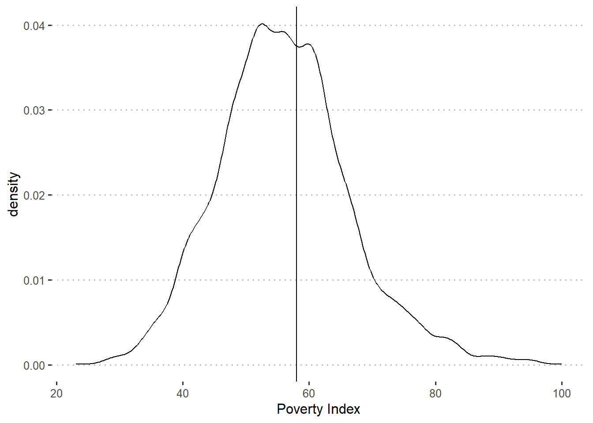
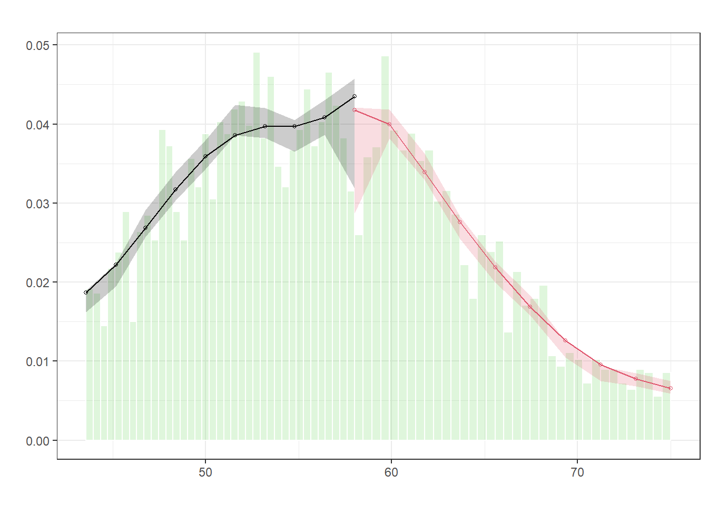
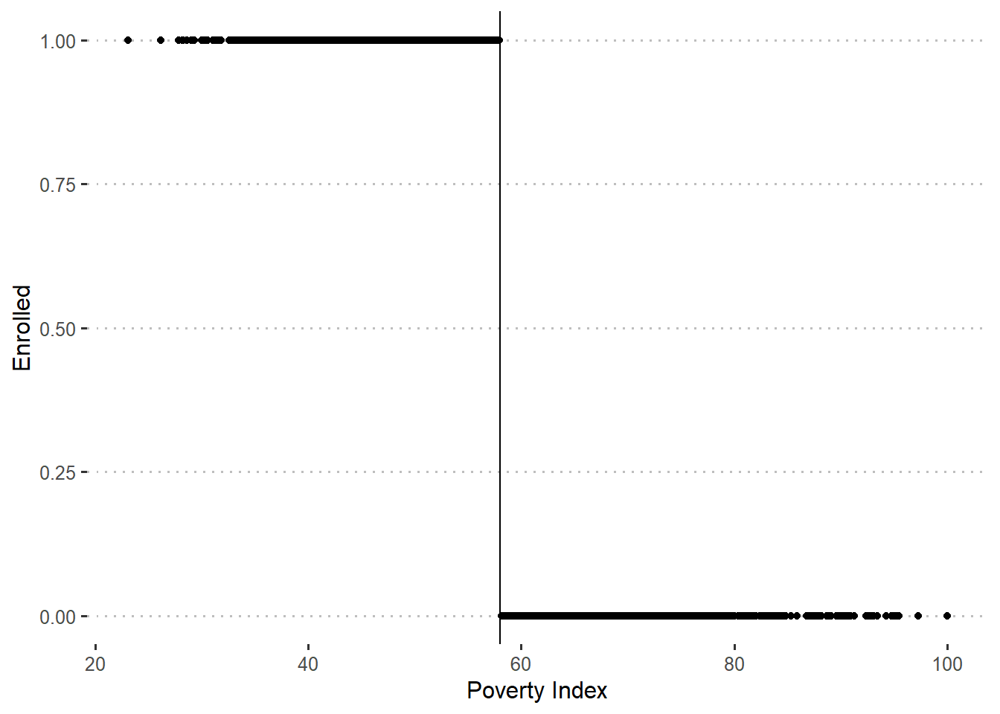
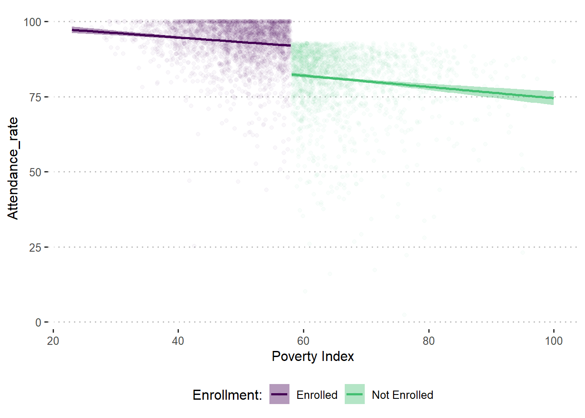

# Create data subset with only treatment localities
df_treat <- trans_df %>%
filter(treatment_locality == 1)6 Regression Discontinuity Designs
Regression Discontinuity Designs (RDD) are a method used to evaluate the impact of a treatment or intervention by focusing on cases where a specific cutoff or threshold determines who receives the treatment. For example, imagine a school program that only allows students with test scores above a certain level to participate. RDD compares students who are just above the threshold (and get the program) with those who are just below it (and don’t get the program). This helps estimate the effect of the program by assuming that those on either side of the cutoff are very similar, except for receiving the program.
In simple terms, RDD looks at situations where a rule or score divides people into different groups and then compares those on either side of that line to see if the treatment makes a real difference.
6.0.1 Application
Now consider how the regression discontinuity design (RDD) method can be applied to our School Feeding Program (SFP). After doing some more investigation into the design of SFP, you find that in addition to randomly selecting treatment villages, the authorities targeted the program to low-income households using the national poverty line. The poverty line is based on a poverty index that assigns each household in the country a score between 20 and 100 based on its assets, housing conditions, and socio demographic structure. The poverty line has been officially set at 58. This means that all households with a score of 58 or below are classified as poor, and all households with a score of more than 58 are considered to be non-poor. Even in the treatment villages, only poor households are eligible to enroll in SFP. Your data set includes information on both poor and non-poor households in the treatment villages
Before carrying out the regression discontinuity design estimations, you decide to check whether there is any evidence of manipulation of the eligibility index. As a first step, you check whether the density of the eligibility index raises any concerns about manipulation of the index. You plot the percentage of schools against the baseline poverty index.
ggplot(df_treat, aes(x = poverty_index)) +
geom_vline(xintercept = 58) +
geom_density() +
labs(x = "Poverty Index")
We can also conduct a McCrary density test, to examine this more formally.
test_density <- rdplotdensity(rdd = rddensity(df_treat$poverty_index, c = 58),
X = df_treat$poverty_index,
type = "both")
The figures do not indicate any clustering of schools right below the cutoff of 58.
Next, you check whether households respected their assignment to the treatment and comparison groups on the basis of their eligibility score. You plot participation in the program against the baseline poverty index and find that two years after the start of the pilot, only households with a score of 58 or below (that is, to the left of the poverty line) have been allowed to enroll in SFP. In addition, all of the eligible households enrolled in SFP. In other words, you find full compliance and have a “sharp” RDD.
ggplot(df_treat, aes(y = enrolled, x = poverty_index)) +
geom_vline(xintercept = 58) +
geom_point() +
labs(x = "Poverty Index", y = "Enrolled")
You now proceed to apply the RDD method to compute the impact of the program. Using follow-up data, you again plot the relationship between the scores on the poverty index and predicted attendance rates and find the relation illustrated in the figure below. In the relationship between the poverty index and the predicted attendance rates, you find a clear break, or discontinuity, at the poverty line (58).
df_treat %>%
filter(round == 1) %>%
mutate(enrolled_lab = ifelse(enrolled == 1, "Enrolled", "Not Enrolled")) %>%
ggplot(aes(x = poverty_index, y = attendance_rate,
group = enrolled_lab, colour = enrolled_lab, fill = enrolled_lab)) +
geom_point(alpha = 0.03) +
geom_smooth(method = "lm") +
labs(x = "Poverty Index", y = "Attendance_rate") +
scale_colour_viridis_d("Enrollment:", end = 0.7) +
scale_fill_viridis_d("Enrollment:", end = 0.7) +
theme(legend.position="bottom")`geom_smooth()` using formula = 'y ~ x'
The discontinuity reflects an increase in attendance rates for those schools eligible to receive the program. Given that schools on both sides of the cutoff score of 58 are very similar, the plausible explanation for the different level of attendance rates is that one group of schools was eligible to enroll in the program and the other was not. You estimate this difference through a regression with the findings shown in the following table.
df_treat <- df_treat %>%
mutate(poverty_index_c0 = poverty_index - 58)
out_rdd <- lm_robust(attendance_rate ~ poverty_index_c0 * enrolled +
age_hh + age_sp + educ_hh + educ_sp +
female_hh + indigenous + hhsize + dirtfloor +
bathroom + land + school_distance,
data = df_treat %>% filter(round == 1))
tbl16 <- tbl_regression(out_rdd, intercept = T) %>%
add_glance_source_note(
glance_fun = broom::glance, # Extract model summary
include = c("adj.r.squared", "r.squared", "nobs") # Add Adjusted R-squared
)Note: We could also estimate the effect of the program in the following ways
Estimating the effect of the program on health expenditures again using regression, but include an interaction with a cubic polynomial of the running variable.
out_rdd_cubic <- lm_robust(attendance_rate ~ enrolled * poverty_index_c0 +
enrolled * I(poverty_index_c0^2) +
enrolled * I(poverty_index_c0^3) +
age_hh + age_sp + educ_hh + educ_sp +
female_hh + indigenous + hhsize + dirtfloor +
bathroom + land + school_distance,
data = df_treat %>% filter(round == 1))
tbl_cubic <- tbl_regression(out_rdd_cubic, intercept = T) %>%
add_glance_source_note(
glance_fun = broom::glance, # Extract model summary
include = c("adj.r.squared", "r.squared", "nobs") # Add Adjusted R-squared
)Estimating the effect of the program on attendance rates again using regression, but only including observations 5 points above or below the cutoff of 58.
out_rdd5 <- lm_robust(attendance_rate ~ enrolled * poverty_index_c0 +
age_hh + age_sp + educ_hh + educ_sp +
female_hh + indigenous + hhsize + dirtfloor +
bathroom + land + school_distance,
data = df_treat %>% filter(round == 1 &
abs(poverty_index_c0) <=5))
tbl_rdd5 <- tbl_regression(out_rdd5, intercept = T) %>%
add_glance_source_note(
glance_fun = broom::glance, # Extract model summary
include = c("adj.r.squared", "r.squared", "nobs") # Add Adjusted R-squared
)
tbl_merge_rdd_all <-
tbl_merge(
tbls = list( tbl16,tbl_cubic, tbl_rdd5),
tab_spanner = c("**Linear**", "**Cubic**", "**5 Point Window**")
)
tbl_merge_rdd_all| Characteristic |
Linear
|
Cubic
|
5 Point Window
|
||||||
|---|---|---|---|---|---|---|---|---|---|
| Beta | 95% CI1 | p-value | Beta | 95% CI1 | p-value | Beta | 95% CI1 | p-value | |
| (Intercept) | 75 | 73, 77 | <0.001 | 75 | 73, 77 | <0.001 | 75 | 72, 77 | <0.001 |
| poverty_index_c0 | -0.15 | -0.22, -0.08 | <0.001 | -0.28 | -0.64, 0.08 | 0.13 | -0.35 | -0.75, 0.06 | 0.094 |
| enrolled | 7.7 | 7.0, 8.5 | <0.001 | 7.6 | 6.4, 8.9 | <0.001 | 7.3 | 5.9, 8.8 | <0.001 |
| age_hh | -0.08 | -0.11, -0.04 | <0.001 | -0.08 | -0.11, -0.04 | <0.001 | -0.05 | -0.10, -0.01 | 0.024 |
| age_sp | 0.05 | 0.01, 0.09 | 0.016 | 0.05 | 0.01, 0.09 | 0.016 | 0.02 | -0.03, 0.07 | 0.5 |
| educ_hh | 0.06 | -0.04, 0.16 | 0.2 | 0.06 | -0.04, 0.16 | 0.2 | 0.05 | -0.10, 0.21 | 0.5 |
| educ_sp | 0.12 | 0.01, 0.23 | 0.034 | 0.12 | 0.01, 0.23 | 0.038 | 0.18 | 0.01, 0.34 | 0.037 |
| female_hh | -0.49 | -1.5, 0.49 | 0.3 | -0.48 | -1.5, 0.50 | 0.3 | -0.73 | -2.1, 0.65 | 0.3 |
| indigenous | 1.6 | 1.1, 2.1 | <0.001 | 1.6 | 1.1, 2.1 | <0.001 | 1.7 | 0.88, 2.6 | <0.001 |
| hhsize | 1.7 | 1.6, 1.8 | <0.001 | 1.7 | 1.6, 1.8 | <0.001 | 1.7 | 1.6, 1.9 | <0.001 |
| dirtfloor | 1.5 | 0.99, 2.0 | <0.001 | 1.5 | 1.0, 2.0 | <0.001 | 1.6 | 0.83, 2.5 | <0.001 |
| bathroom | -0.49 | -0.94, -0.03 | 0.036 | -0.49 | -0.95, -0.03 | 0.036 | -0.09 | -0.86, 0.68 | 0.8 |
| land | 0.04 | -0.03, 0.11 | 0.3 | 0.04 | -0.03, 0.11 | 0.2 | 0.01 | -0.11, 0.14 | 0.8 |
| school_distance | 0.00 | 0.00, 0.01 | 0.11 | 0.00 | 0.00, 0.01 | 0.11 | 0.01 | -0.01, 0.02 | 0.3 |
| poverty_index_c0 * enrolled | 0.17 | 0.09, 0.25 | <0.001 | ||||||
| I(poverty_index_c0^2) | 0.01 | -0.02, 0.04 | 0.4 | ||||||
| I(poverty_index_c0^3) | 0.00 | 0.00, 0.00 | 0.4 | ||||||
| enrolled * poverty_index_c0 | 0.33 | -0.10, 0.77 | 0.13 | 0.36 | -0.16, 0.87 | 0.2 | |||
| enrolled * I(poverty_index_c0^2) | -0.01 | -0.05, 0.02 | 0.5 | ||||||
| enrolled * I(poverty_index_c0^3) | 0.00 | 0.00, 0.00 | 0.6 | ||||||
| Adjusted R² = 0.457; R² = 0.458; No. Obs. = 4,960 | |||||||||
| 1 CI = Confidence Interval | |||||||||
Combining all these results together we see a consistent effect of the program.
6.0.2 Results
Is the result of the RDD analysis valid for all schools in the program?
No, the RDD estimates represent the effects for schools with attendance rates very close to the defined eligibility cutoff. Intuitively, this is the region where schools just eligible for the program and those just ineligible have the most similar baseline characteristics and can be meaningfully compared.
Compared with the impact estimated with the randomized assignment method, what does this result say about schools with poverty index just below the cutoff?
This result indicates that schools with poverty index just below the eligibility threshold experience a smaller increase in attendance rates than the average eligible school. Specifically, schools just under the cutoff score experience an increase of 7.3 percentage points in attendance rates, which is slightly less than the average improvement observed with the randomized assignment method.